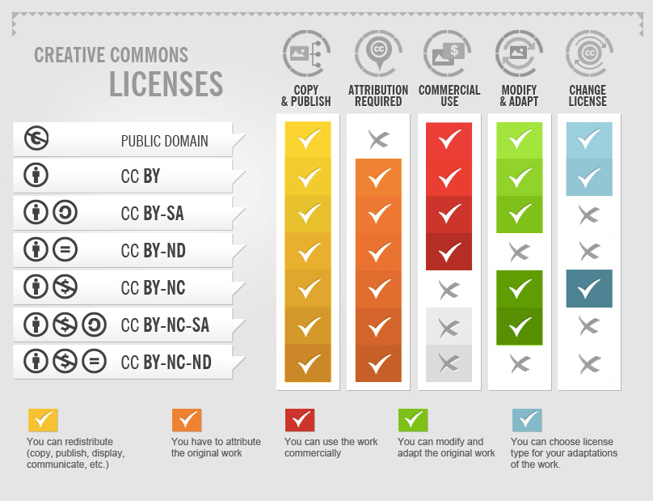
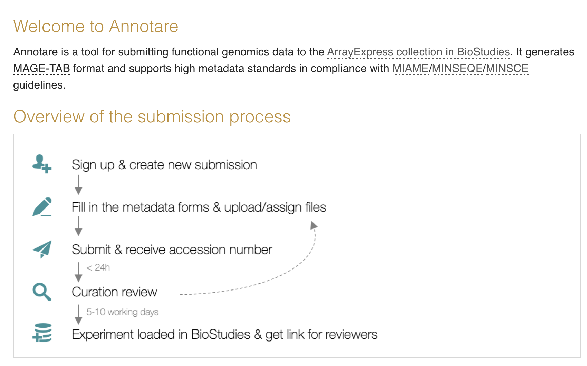

Applied Open Science and FAIR principles to NGS
⏰ Time Estimation: X minutes
💬 Learning Objectives:
1. Apply Open Science and FAIR principles to your data
You should consider revisiting these exercises and examples after completing lesson 1 in the course material.
Note that not all data needs to be archived and deposited. NGS data processing generates vast amounts of data that might not need to be shared publicly, as long as you describe how you produced the data. For example, in a usual bulk RNAseq experiment, FASTQ reads are cleaned and subsequently aligned to a reference genome, creating a subset of cleaned FASTQ files and BAM files. After transcript/gene quantification, you can obtain a final count matrix that can be used for data analysis, such as Differential Expression Analysis. If you provide enough documentation on how these files were processed (which software, which versions, and which options), you won’t need to deposit either the cleaned or aligned reads, only the original FASTQ files and the final result of your preprocessing. This will save quite the computational resources and metadata needed to preserve the intermediary data. Providing documentation on how the data was generated is much simpler if you are using community-curated pipelines such as the ones created by the nf-core community.
Open Science
Unless your data is of sensitive nature (human individual samples, patient data, or anything protected), you should always deposit your data with as few restrictions as possible. This includes publishing your manuscript in Open Access journals as well! For your generated NGS data, our suggestion is that you use a license such as Creative Commons license like CC-BY license, which only requires users to attribute the source of the data, but this also depends on the repository that you use for your data. We will see more about it in the lesson 7

FAIR principles
Next, we will see how we can apply each of the FAIR principles to your NGS data.
Findable
To make your NGS data easy to find, you should deposit it in a domain-specific repository, such as the Gene Expression Omnibus or Annotare. We will see more about them in lesson 7. Both of these repositories will help you give your data a unique identifier, and provide information (metadata) on how the data was generated. The metadata you include in your submission should contain, at least, the minimum necessary information to understand what kind of data it is submitted, and how it was generated. This includes:
- Sample metadata in tabular format, containing information about the samples used in the experiment as well as variables of interest for the analysis.
- Experiment metadata, including data provenance, that is, how the samples were obtained, from which organism, following what protocols, kits, sequencing libraries, sequencing method, and data preprocessing workflows/pipelines. This is usually submitted as part of a submission form and it depends on the repository.
- Keywords, such as type of NGS data, conditions or diseases studied in the experiment, organisms used, genes studied, etc.
Accessible
Both GEO and Annotare repositories promote the use of unrestricted access to the data. In the case of Annotare, deposited data is under CC0 license, while GEO states deposited data is public domain. Depositing your data will require you to have an account but it does not require authentication from the user to access and download the data.

If you would like to deposit sensitive data that need controlled access, it is possible to do so through the European Genome-phenome Archive (EGA).
In addition, if you have deposited your data with rich metadata, as explained in the previous step, it will be easier for users to query your data by date, author, organism, type of NGS data, etc etc.
Interoperable
By using standard bioinformatics formats, such as fastq files for raw NGS data, count matrices in tabular format, BED files for peak calling results, etc., you are already complying to this section. In addition, GEO and Annotare repositories are compliant to NGS data standards, such as MIAME/MINSEQE/MINSCE guidelines.
Nonetheless, this is the easy part! Adhering to controlled vocabularies seems to be the most difficult part of the FAIR principles. Here are some cases:
- Using organism names instead of their taxonomy. For example: mouse instead of Mus musculus, or human, instead of Homo sapiens. Even better, we should use a taxonomy ID, such as the NCBI taxonomy ID for humans NCBITaxon_9606, which will unequivocally refer to humans.
- Using gene names or symbols instead of gene IDs. For example: the gene POU5F1 has many synonyms, like OCT4, OCT, and OTF4. To be explicit, it is better to reference the gene ID, like an ENSEMBL gene ID ENSG00000204531.
- Using disease names instead of disease IDs. Again, this will reference specifically the disease you mention.
There are many more stances where you can use controlled vocabularies for other variables of interest, like cell type, tissue, cell cycle, etc. We will see in the metadata lesson where you can find controlled vocabularies for different variables of interest in NGS data.
Reusable
In order for your NGS data to be reusable, you will have to provide thorough documentation on how it was generated, as well as the terms (that is a license) on how the data can be used/retrieved. We have talked already about collecting metadata on how the samples were generated (laboratory protocols, sequencing library, kits, technology, etc) and processed (workflows or pipelines along with the software used, which versions, and options). We also talked about what type of standard file formats you should use, such as fastq files for raw data and tabular formats for sample metadata. Finally, we have discussed in the Open Science section that you should try to license your data as freely as possible, like a CC0 license or CC-BY license. If your data is of sensitive nature and has restricted access or conditions, you should instead provide information on how other people can access the data, as well as any agreements or ethical approvals necessary for its reuse.
Sources
- Elixir Belgium: https://rdm.elixir-belgium.org/omics_data